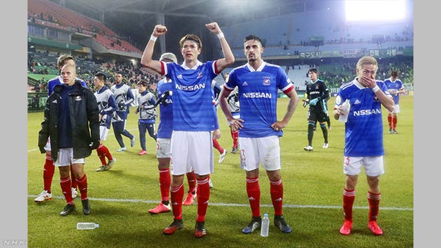
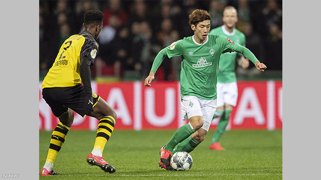

facebook
twitter
‣2020/02/10(月)
サッカーのアジアナンバーワンクラブを争うＡＣＬ＝アジアチャンピオンズリーグは１次リーグの第１戦が行われ、Ｊ１王者の横浜Ｆ・マリノスと初出場のヴィッセル神戸がともに勝って白星スタートを切りました。 ともに白星スタートを切ったＦ・マリノスとヴィッセルの第２戦は、いずれも今月19日に行われる予定です。
サッカーのドイツカップ３回戦で、ブレーメンの大迫勇也選手がドルトムントとの試合でアシストをマークし、チームの勝利に貢献しました。 大迫選手は４日に行われた試合で、ことしの公式戦で初めて先発出場し、２対１と追い上げられた直後の後半25分に中盤でボールを受け、スルーパスを通して貴重な追加点につなげました。 大迫選手は後半44分に退き、チームは３対２で競り勝って準々決勝に進みました。
‣2020/02/10(月)
‣2020/02/10(月)
サッカーのスペイン１部リーグ エイバルの乾貴士選手が７日、アウェーのアラベス戦に２点リードされた後半38分から出場し、アシストを記録しました。チームは１対２で敗れました。 また、イタリア１部リーグでボローニャの冨安健洋選手は、ローマ戦にフル出場しました。チームは３対２で競り勝ちました。 ドイツ１部リーグでは、フランクフルトの長谷部誠選手がアウクスブルク戦に前半30分から出場し、チームは５対０で勝ちました。